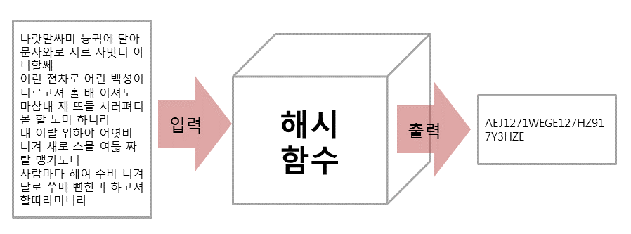
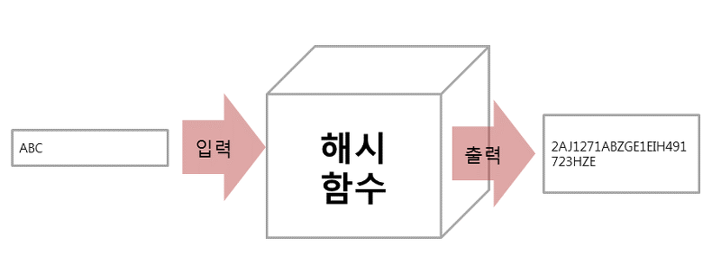
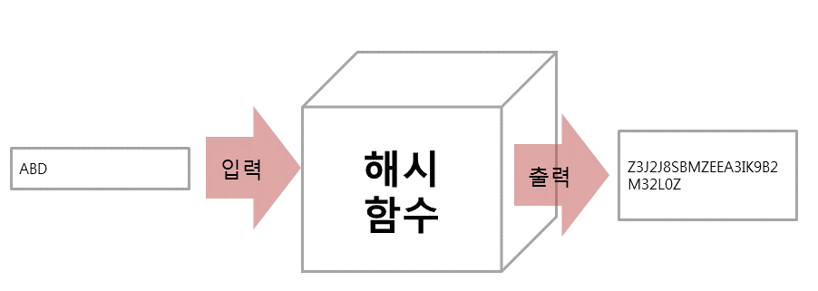

 위와 같이 긴 문장을 해시함수라는 곳에 입력을 시켜보니, 약 20글자정도의 의미를 알 수 없는 문자+숫자로 결과를 출력하였습니다. 뭔가 값을 축약시켜 주는 놈 같습니다.
 이번에는 매우 짧은 단어를 해시함수라는 곳에 입력을 시켜보았는데, 마찬가지로 약 20글자 정도의 의미를 알 수 없는 문자+숫자의 조합이 결과로 출력되었습니다. 입력값보다 출력값이 크네요. 축약은 아니고 변화시켜 주는 놈 같습니다.
 마지막으로, 매우 짧은 단어지만 바로 전단계에서 사용한 "ABC" 대신 "ABD"를 입력해보았습니다. 그런데 "ABC" 데이터와 입력은 한글자 차이가 나지만 결과는 완전히 다른 20글자의 문자+숫자의 조합이 출력되었습니다. 이것이 바로 해시함수의 가장 큰 특징을 나타내는 것입니다. ABC와 ABD의 약간 다른 입력값으로 인해서 단순히 출력값도 비슷해지겠지 생각을 했지만 완전히 예상을 못하는 난수값을 출력하는게 바로 해시입니다.

In the box below, turn the link to an image, and fill out the alt text brackets to say "A representation of Octdrey Catburn":